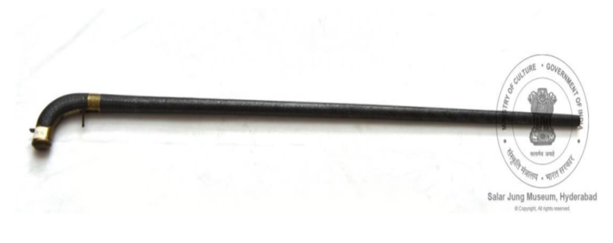

🔇 Is bhasha me is vastu ka audio abhi uplabdh nahi hai.
परिग्रह संख्या: ACQ-91-50 चलने की छड़ी

परिग्रह संख्या: ACQ-91-50
यह धातु से बना एक बहुउपयोगी हथियार है, जो देखने में चलने की छड़ी जैसा लगता है। इसमें कुल सात अलग-अलग हिस्से हैं, जिन्हें पेंच की सहायता से आपस में जोड़ा जाता है। सात भागों में से सबसे ऊपर वाला भाग लकड़ी की छड़ जैसा है, जिसके एक सिरे पर मजबूत धातु का कुंडलित तार लगा है। तीसरे भाग में एक चाकू लगा है और चौथे भाग में छेद करने के लिए छोटा, मजबूत तथा नुकीला धातु का डंडा लगा है। यह चलने की छड़ी तांबा, चाँदी तथा जस्ता मिश्रधातु से बनाई गई है।
पूरी छड़ी पर पुष्पाकार अलंकरण बने हैं। इसका रंग चाँदी जैसा सफेद है, जो कल्याणी शिल्पकला की याद दिलाता है। यह कलाकृति भारत के कर्नाटक राज्य के बीदर क्षेत्र की है। इसका निर्माण ईस्वी 19वीं शताब्दी में माना जाता है।
Acc No: ACQ-91-50 Walking Stick (Multipurpose Weapon)
Acc No: ACQ-91-50
A multipurpose metal weapon designed to resemble a walking stick, consisting of seven detachable segments connected via screw mechanisms. The uppermost segment resembles a wooden rod with a strong coiled metal wire at one end; the third segment houses a knife, and the fourth contains a sharp, sturdy metal spike for piercing. Crafted from zinc alloy with copper and silver components.
Adorned throughout with silver-white floral patterns reminiscent of "Kalyani" craftsmanship, this piece originates from Bidar, Karnataka, India, and dates to the 19th century CE.
8. చేతికర్ర
Acc No: ACQ-91-50
ఒక స్క్రూ పరికరం ద్వారా కలిపిన , వేరు చేయగల ఏడు భాగాలతో కూడిన, చేతికర్రను పోలిన బహుళ ప్రయోజన లోహ ఆయుధం. ఆ ఏడు భాగాలలో, పై భాగం ఒక చివర బలమైన లోహపు తీగ జతచేయబడిన చెక్క కడ్డీని పోలి ఉంటుంది, మూడవ భాగంలో ఒక కత్తి ఉంటుంది, మరియు నాలుగవ భాగంలో పొడవడానికి ఒక పొట్టి, పదునైన లోహపు కడ్డీ ఉంటుంది. ఈ చేతికర్ర రాగి, వెండి భాగాలతో మరియు జింక్ మిశ్రమ లోహంతో తయారు చేయబడింది.
చేతికర్ర అంతటా ఉన్న పూల డిజైన్లు వెండి తెలుపు రంగులో ఉండి, 'కళాయణి' పనితనాన్ని గుర్తుచేస్తాయి. ఈ వస్తువు యొక్క కళారూపం భారతదేశంలోని కర్ణాటక రాష్ట్రంలోని బీదర్కు చెందినది. ఇది క్రీ.శ. 19వ శతాబ్దానికి చెందినదిగా గుర్తించబడింది.
చేతికర్ర అంతటా ఉన్న పూల డిజైన్లు వెండి తెలుపు రంగులో ఉండి, 'కళాయణి' పనితనాన్ని గుర్తుచేస్తాయి. ఈ వస్తువు యొక్క కళారూపం భారతదేశంలోని కర్ణాటక రాష్ట్రంలోని బీదర్కు చెందినది. ఇది క్రీ.శ. 19వ శతాబ్దానికి చెందినదిగా గుర్తించబడింది.
۸. عصا
اندراج نمبر: ACQ-91-50
یہ ایک منفرد اور کثیر المقاصد دھاتی ہتھیار ہے، جو بظاہر عصا کی شکل میں دکھائی دیتا ہے۔ یہ سات الگ الگ حصوں پر مشتمل ہے، جنہیں پیچ دار جوڑوں کے ذریعے آپس میں جوڑا جاتا ہے۔ ان حصوں میں سے اوپری حصہ لکڑی کی سلاخ پر مشتمل ہے، جس کے ایک سرے پر مضبوط دھاتی تار لپٹی ہوئی ہے۔ تیسرے حصے میں ایک خنجر نصب ہے، جبکہ چوتھے حصے میں سوراخ کرنے کے لیے ایک مختصر مگر مضبوط نوک دار دھاتی سلاخ موجود ہے۔یہ عصا چاندی اور تانبے کے اجزا سے تیار کیا گیا ہے، جبکہ اس میں جست کے مرکب دھات کا بھی استعمال کیا گیا ہے۔
اس کی پوری سطح پر پھولوں کے دلکش نقش بنائے گئے ہیں۔ اس کا چاندی مائل سفید رنگ بیدری فن کاری کی مشہور کلیانی طرزِ کاریگری کی یاد دلاتا ہے۔ یہ فن بیدر، کرناٹک، ہندوستان کی بیدری فن کاری سے تعلق رکھتا ہے، اس کا تعلق انیسویں صدی عیسوی سے ہے۔
اس کی پوری سطح پر پھولوں کے دلکش نقش بنائے گئے ہیں۔ اس کا چاندی مائل سفید رنگ بیدری فن کاری کی مشہور کلیانی طرزِ کاریگری کی یاد دلاتا ہے۔ یہ فن بیدر، کرناٹک، ہندوستان کی بیدری فن کاری سے تعلق رکھتا ہے، اس کا تعلق انیسویں صدی عیسوی سے ہے۔
অ্যাক্সেস নম্বর: ACQ-91-50 লাঠি
परिग्रह संख्या: ACQ-91-50
এটি একটি বহুমুখী ধাতব অস্ত্র যা দেখতে অনেকটা হাঁটার লাঠির মতো; এতে সাতটি আলাদা করা যায় এমন অংশ রয়েছে যা স্ক্রউ-এর সাহায্যে একে অপরের সাথে যুক্ত করা যায়। মোট সাতটি অংশের মধ্যে, একেবারে উপরের অংশটি দেখতে কাঠের দণ্ডের মতো যার এক প্রান্তে ধাতব তারের শক্তিশালী প্যাঁচানো বিন্যাস রয়েছে; তৃতীয় অংশে একটি ছুরি এবং চতুর্থ অংশে বিদ্ধ করার উপযোগী একটি ছোট, মজবুত ও ধারালো ধাতব দণ্ড রয়েছে। লাঠিটি তামা ও রুপার উপাদান এবং জিঙ্ক সংকর ধাতু দিয়ে তৈরি।
লাঠিটির গায়ে সর্বত্র রুপালি-সাদা রঙের ফুলের নকশা রয়েছে, যা 'কল্যাণী' শিল্পরীতির কথা স্মরণ করিয়ে দেয়। এই শিল্পকর্মটি ভারতের কর্ণাটক রাজ্যের বিদার অঞ্চলের। এটি খ্রিস্টীয় ঊনবিংশ শতাব্দীর নিদর্শন।
Acc No: ACQ-91-50 વૉકિંગ સ્ટિક
परिग्रह संख्या: ACQ-91-50
તાંબા અને ચાંદીના ઘટકો તથા ઝિંક એલોય (જસતની મિશ્રધાતુ)માંથી બનેલી, ચાલવાની લાઠી જેવા દેખાતી બહુહેતુક ધાતુની શસ્ત્ર લાઠી, જે સ્ક્રૂની વ્યવસ્થા દ્વારા એકબીજા સાથે જોડાયેલા સાત અલગ થઈ શકે તેવા ભાગોની બનેલી છે. કુલ સાત ભાગોમાંથી, સૌથી ઉપરનો ભાગ એક મજબૂત ધાતુની ગૂંચળાવાળી વાયરવાળી લાકડાની છડી જેવો દેખાય છે, ત્રીજા ભાગમાં છરી છે અને ચોથા ભાગમાં ભેદવા માટેનો ટૂંકો, મજબૂત ધારદાર ધાતુનો સળિયો છે.
આ લાઠી પર ચારેય તરફ ચાંદી જેવા સફેદ રંગની પુષ્પીય (ફૂલ-છોડની) ડિઝાઇનો છે, જે "કલાયાણી" કારીગરીની યાદ અપાવે છે. આ કલાત્મક વસ્તુ બિદર, કર્ણાટક, ભારતની છે અને તે ઈ.સ. ૧૯મી સદીની છે.
Acc No: ACQ-91-50 ವಾಕಿಂಗ್ ಸ್ಟಿಕ್
परिग्रह संख्या: ACQ-91-50
ಸ್ಕ್ರೂಗಳ ಮೂಲಕ ಒಂದಕ್ಕೊಂದು ಜೋಡಿಸಲಾದ ಏಳು ಬಿಡಿಭಾಗಗಳನ್ನು ಹೊಂದಿರುವ, ನಡೆಯಲು ಸಹಾಯಕ್ಕಾಗಿ ಬಳಸುವ ಕೋಲಿನಂತೆ ಕಾಣುವ ಬಹುಪಯೋಗಿ ಲೋಹದ ಆಯುಧ ಇದಾಗಿದೆ. ಒಟ್ಟು ಏಳು ಭಾಗಗಳಲ್ಲಿ, ಅತ್ಯಂತ ಮೇಲ್ಭಾಗದ್ದು ಒಂದು ತುದಿಯಲ್ಲಿ ಬಲವಾದ ಲೋಹದ ಸುರಳಿ ತಂತಿಯನ್ನು ಹೊಂದಿರುವ ಮರದ ಕೋಲಿನಂತೆ ತೋರುತ್ತದೆ; ಮೂರನೇ ಭಾಗವು ಚಾಕುವನ್ನು ಮತ್ತು ನಾಲ್ಕನೇ ಭಾಗವು ಚುಚ್ಚಲು ಅನುಕೂಲಕರವಾದ ಗಟ್ಟಿಮುಟ್ಟಾದ, ಚೂಪಾದ ಅಂಚುಳ್ಳ ಚಿಕ್ಕ ಲೋಹದ ಕೋಲನ್ನು ಹೊಂದಿದೆ. ಈ ನಡೆದಾಡುವ ಕೋಲನ್ನು ತಾಮ್ರ ಮತ್ತು ಬೆಳ್ಳಿಯ ಅಂಶಗಳು ಹಾಗೂ ಸತುವಿನ ಮಿಶ್ರಲೋಹದ ವಸ್ತುವಿನಿಂದ ಮಾಡಲಾಗಿದೆ.
ಈ ನಡೆಯಲು ಸಹಾಯಕ್ಕಿರುವ ಈ ಕೋಲಿನಾದ್ಯಂತ ಇರುವ ಬೆಳ್ಳಿ-ಬಿಳಿ ಬಣ್ಣದ ಹೂವಿನ ವಿನ್ಯಾಸಗಳು "ಕಲ್ಯಾಣಿ" ಕೌಶಲ್ಯದ ಕೆಲಸವನ್ನು ನೆನಪಿಸುತ್ತವೆ. ಈ ವಸ್ತುವಿನ ಕಲಾಶೈಲಿಯು ಭಾರತದ ಕರ್ನಾಟಕದ ಬೀದರ್ಗೆ ಸೇರಿದ್ದಾಗಿದೆ. ಇದನ್ನು ಕ್ರಿ.ಶ. 19ನೇ ಶತಮಾನದ್ದೆಂದು ಅಂದಾಜಿಸಲಾಗಿದೆ.
୮. ୱାକିଂ ଷ୍ଟିକ୍ ବା ଚାଲିବା ବାଡ଼ି
Acc No: ACQ-91-50
ଏହା ଦେଖିବାକୁ ଏକ ସାଧାରଣ ଚାଲିବା ବାଡ଼ି ପରି ଲାଗିଲେ ମଧ୍ୟ ଏହା ଏକ ବହୁମୁଖୀ ଧାତବ ଅସ୍ତ୍ର। ଏଥିରେ ସାତୋଟି ଅଲଗା ଅଲଗା ଅଂଶ ରହିଛି, ଯାହାକୁ ସ୍କ୍ରୁ ସାହାଯ୍ୟରେ ପରସ୍ପର ସହିତ ଖଞ୍ଜି ଯୋଡ଼ାଯାଇଥାଏ। ଏହି ସାତୋଟି ଭାଗ ମଧ୍ୟରୁ ସବୁଠାରୁ ଉପର ଭାଗଟି ହେଉଛି ଏକ କାଠ ବାଡ଼ି, ଯାହାର ଗୋଟିଏ ମୁଣ୍ଡରେ ଏକ ମଜବୁତ ଧାତବ କୁଣ୍ଡଳୀଟି ତାର ବେଷ୍ଟିତ ହୋଇରହିଛି। ଏହାର ତୃତୀୟ ଭାଗରେ ଏକ ଛୁରୀ ଏବଂ ଚତୁର୍ଥ ଭାଗରେ କିଛି ବିନ୍ଧିବା ପାଇଁ ଅଳ୍ପ ଚଉଡ଼ାର ଏକ ମଜବୁତ ତଥା ଧାରୁଆ ଧାତବ ବାଡ଼ିଟିଏ ରହିଛି। ଏହି ବାଡ଼ିଟି ତମ୍ବା, ରୂପା ଓ ଜିଙ୍କ୍ ର ମିଶ୍ରଣରେ ତିଆରି।
ଏହାର ସବୁଆଡ଼େ ରୂପାଲୀ ଧଳା ରଙ୍ଗର ସୁନ୍ଦର ଫୁଲ ଡିଜାଇନ୍ ରହିଛି, ଯାହାକୁ ଦେଖିଲେ 'କଲ୍ୟାଣୀ' ନାମକ କାରିଗରୀ କୌଶଳର କଥା ମନକୁ ଆସିଥାଏ। ଏହି କଳାକୃତିଟି କର୍ଣ୍ଣାଟକର 'ବିଦର' ସହରର ଏବଂ ଜଣାପଡ଼େ ଯେ ଏହା ଖ୍ରୀଷ୍ଟାବ୍ଦ ୧୯ଶ ଶତାବ୍ଦୀର।
ଏହାର ସବୁଆଡ଼େ ରୂପାଲୀ ଧଳା ରଙ୍ଗର ସୁନ୍ଦର ଫୁଲ ଡିଜାଇନ୍ ରହିଛି, ଯାହାକୁ ଦେଖିଲେ 'କଲ୍ୟାଣୀ' ନାମକ କାରିଗରୀ କୌଶଳର କଥା ମନକୁ ଆସିଥାଏ। ଏହି କଳାକୃତିଟି କର୍ଣ୍ଣାଟକର 'ବିଦର' ସହରର ଏବଂ ଜଣାପଡ଼େ ଯେ ଏହା ଖ୍ରୀଷ୍ଟାବ୍ଦ ୧୯ଶ ଶତାବ୍ଦୀର।
८. चालण्याची काठी
Acc No: ACQ-91-50
स्क्रूच्या साहाय्याने एकमेकांना जोडल्या जाणाऱ्या सात सुट्या भागांसह चालण्याच्या काठीसारखे दिसणारे हे एक बहुउद्देशीय धातूचे शस्त्र आहे. एकूण सात भागांपैकी, सर्वात वरचा भाग एका टोकाला मजबूत धातूची गुंडाळलेली तार असलेला लाकडी दांडा असल्यासारखे दिसते, तिसऱ्या भागात एक चाकू आहे आणि चौथ्या भागात भोसकण्यासाठी एक आखूड, मजबूत आणि धारदार धातूची सळई आहे. ही चालण्याची काठी तांबे व चांदीचे घटक आणि जस्ताच्या मिश्रधातूपासून बनवली आहे.
चालण्याच्या संपूर्ण काठीवर चंदेरी पांढऱ्या रंगात फुलांची नक्षी आहे, जी 'कल्याणी' कारागिरीची आठवण करून देते. या वस्तूचा कलाप्रकार बिदर, कर्नाटक, भारत येथील आहे. हे इ.स. १९ व्या शतकातील आहे.
चालण्याच्या संपूर्ण काठीवर चंदेरी पांढऱ्या रंगात फुलांची नक्षी आहे, जी 'कल्याणी' कारागिरीची आठवण करून देते. या वस्तूचा कलाप्रकार बिदर, कर्नाटक, भारत येथील आहे. हे इ.स. १९ व्या शतकातील आहे.
Acc No: ACQ-91-50 ഊന്നുവടി
Acc No: ACQ-91-50
വേർപെടുത്താവുന്ന ഏഴ് ഭാഗങ്ങളുള്ള ഒരു ഊന്നുവടി പോലെ തോന്നിക്കുന്ന ഒന്നിലധികം ആവശ്യങ്ങൾക്കായി ഉപയോഗിക്കാവുന്ന ഒരു ലോഹ ആയുധമാണിത്. സ്ക്രൂ സംവിധാനങ്ങൾ ഉപയോഗിച്ചാണ് ഈ ഭാഗങ്ങൾ പരസ്പരം ഘടിപ്പിച്ചിരിക്കുന്നത്. ആകെ ഏഴ് ഭാഗങ്ങളുള്ളതിൽ, ഏറ്റവും മുകളിലുള്ള ഭാഗം ഒരു വശത്ത് ശക്തമായ മെറ്റൽ കോയിൽ വയർ ഘടിപ്പിച്ച ഒരു മരത്തടിയാണെന്ന് കാണാം. ഇതിന്റെ മൂന്നാമത്തെ ഭാഗത്തിൽ ഒരു കത്തിയും, നാലാമത്തെ ഭാഗത്തിൽ വസ്തുക്കൾ കുത്തിത്തുളയ്ക്കാൻ ഉപയോഗിക്കാവുന്ന മൂർച്ചയേറിയതും ചെറുതുമായ ഒരു ലോഹക്കമ്പിയുമുണ്ട്. ഈ ഊന്നുവടി ചെമ്പ്, വെള്ളി ഘടകങ്ങൾ കൊണ്ടും സിങ്ക് ലോഹസങ്കരം എന്ന വസ്തു ഉപയോഗിച്ചുമാണ് നിർമ്മിച്ചിരിക്കുന്നത്.
വടിയിലുടനീളം കാണുന്ന പൂക്കളുടെ ഡിസൈനുകൾ "കല്യാണി" കൊത്തുപണിയെ ഓർമ്മിപ്പിക്കുന്ന വെള്ളിവെളുപ്പാണ്. ഇതിന്റെ നിർമ്മാണ ശൈലി ഇന്ത്യയിലെ കർണാടകയിലുള്ള ബിദാർ എന്ന പ്രദേശത്തെ കലാരൂപത്തിൽ പെട്ടതാണ്. ഇത് എഡി 19-ാം നൂറ്റാണ്ടിലെ നിർമ്മിതിയാണെന്ന് കരുതപ്പെടുന്നു.
8. ஊன்றுகோல்
Acc No: ACQ-91-50
இது நடைத் தடியைப் போன்ற தோற்றமுடைய, பல்நோக்கு உலோக ஆயுதமாகும். இதில் மொத்தம், ஏழு பிரிக்கக்கூடிய பகுதிகள் உள்ளன. ஒவ்வொரு பகுதியும், திருகு அமைப்பின் மூலம், ஒன்றோடொன்று இணைக்கப்படுகின்றன. மேலேயுள்ள முதல் பகுதி, மரக் கம்பியைப் போன்ற, தோற்றம் கொண்டுள்ளது. அதன் ஒரு முனையில், வலுவான சுருள் வடிவ, உலோகக் கம்பி பொருத்தப்பட்டுள்ளது. மூன்றாவது பகுதியில் கத்தி பொருத்தப்பட்டுள்ளது. நான்காவது பகுதியில் குத்துவதற்கான குறுகிய, வலுவான, கூர்மையான உலோகக் கம்பி அமைந்துள்ளது. இந்நடைத் தடி செம்பு மற்றும் வெள்ளிக் கூறுகளாலும் துத்தநாகக் கலவைப் பொருளாலும் தயாரிக்கப்பட்டுள்ளது.
நடைத் தடியின் முழுப் பரப்பிலும் மலர் வடிவ அலங்காரங்கள் காணப்படுகின்றன. அதன் வெள்ளி நிறத் தோற்றம், கலையானி வேலைப்பாட்டை நினைவூட்டுகிறது. இப்பொருள் இந்தியாவின் கர்நாடக மாநிலம், பீதர் பகுதியின் உலோகக் கலை மரபைச் சேர்ந்ததாகும். இது பத்தொன்பதாம் நூற்றாண்டைச் சேர்ந்ததாகக் கால நிர்ணயம் செய்யப்படுகிறது.
நடைத் தடியின் முழுப் பரப்பிலும் மலர் வடிவ அலங்காரங்கள் காணப்படுகின்றன. அதன் வெள்ளி நிறத் தோற்றம், கலையானி வேலைப்பாட்டை நினைவூட்டுகிறது. இப்பொருள் இந்தியாவின் கர்நாடக மாநிலம், பீதர் பகுதியின் உலோகக் கலை மரபைச் சேர்ந்ததாகும். இது பத்தொன்பதாம் நூற்றாண்டைச் சேர்ந்ததாகக் கால நிர்ணயம் செய்யப்படுகிறது.